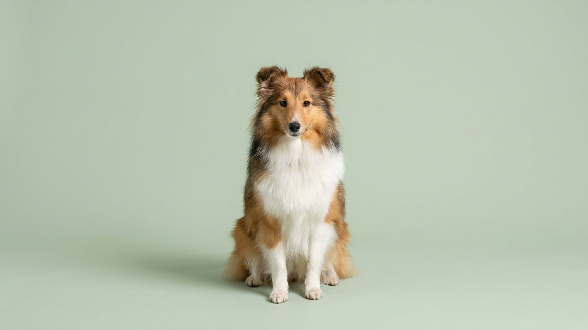

Звонок в дверь — и шелти уже стоит у порога с пронзительным лаем, будто за стеной стадо, которое надо удержать. Многие хозяева списывают это на вредность, но причина глубже: шетландская овчарка создана управлять движением. Без работы для ума эта потребность выливается в лай, тревогу и навязчивое поведение. В статье — как дать шелти то, что ему действительно нужно, и сделать жизнь в квартире комфортной для обоих.
🐾 Всё о вашем питомце — в одном приложении
AI-ветеринар, дневник, напоминания о прививках и уходе. Установите AnimaLife — это бесплатно, в Telegram и MAX.
Шетландская овчарка — не уменьшенная колли, хотя внешнее сходство очевидно. Это самостоятельная порода, отбиравшаяся на Шетландских островах для самостоятельной пастьбы в суровых условиях. Шелти умеет принимать решения, отслеживать движение, удерживать внимание на нескольких объектах сразу. Этот интеллект никуда не девается в городской квартире — он ищет выход.
Без умственной нагрузки шелти начинает «пасти» всё вокруг: детей, кошку, гостей. Появляется навязчивый облаиватель движущихся объектов, тревожность, разрушительное поведение. Решение не в том, чтобы больше гулять, а в том, чтобы давать задачи:
Шелти реагирует на любое движение или звук у двери мгновенно и громко — это пастушья реакция контроля территории. Наказание здесь не работает и только разрушает доверие. Нужно перенаправление и формирование альтернативного поведения.
Результат приходит за 3–6 недель последовательной работы. Шелти понятлива: она быстро схватывает новые правила, если они объяснены без грубости.
Шетландская овчарка тонко считывает интонацию и настроение хозяина. Резкий тон, физическое наказание или постоянные окрики закрывают собаку: она становится тревожной, может начать прятаться или избегать контакта. Порода реагирует на позитивное подкрепление — поощрение, игру, спокойный ровный голос.
К чужим шелти поначалу настороженна — порода не бросается знакомиться со всеми подряд. Это не агрессия, а осторожность. К своей семье привязанность глубокая: шелти следует за хозяином по пятам и хорошо считывает его состояние. Одиночество переносит хуже средних пород — лучше, если в доме кто-то есть большую часть дня.
Густая двойная шерсть шелти красива, но требует регулярного ухода. Без расчёски подшёрсток сваливается в колтуны, особенно за ушами и на «штанишках».
🐾 Спросите AI-ветеринара прямо сейчас
AnimaLife — приложение, где AI-ветеринар отвечает на вопросы о кошке или собаке 24/7. Бесплатно, без записи и очередей.
🐾 Понравился разбор?
Подпишитесь на канал — каждый день разбираем по одному тревожному симптому у кошек и собак: что в пределах нормы, а когда пора к врачу. Подпишитесь, чтобы не пропустить разбор, который может спасти здоровье вашего питомца.